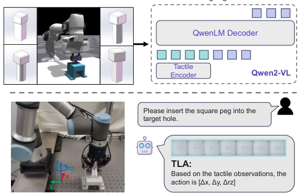
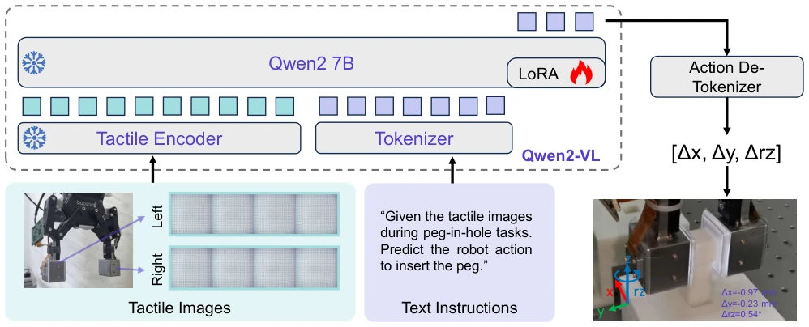
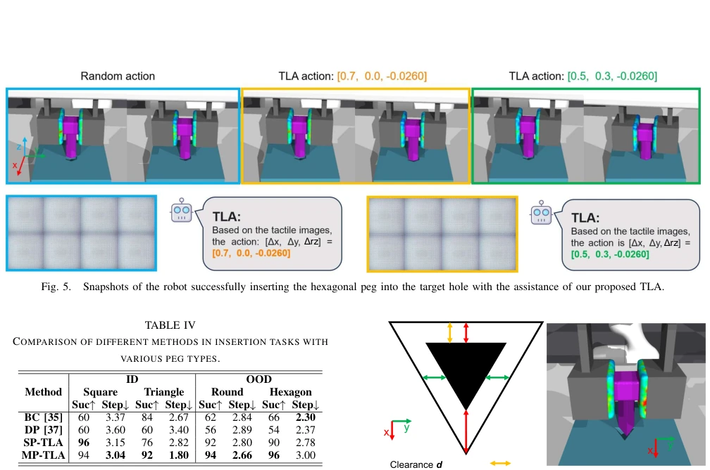
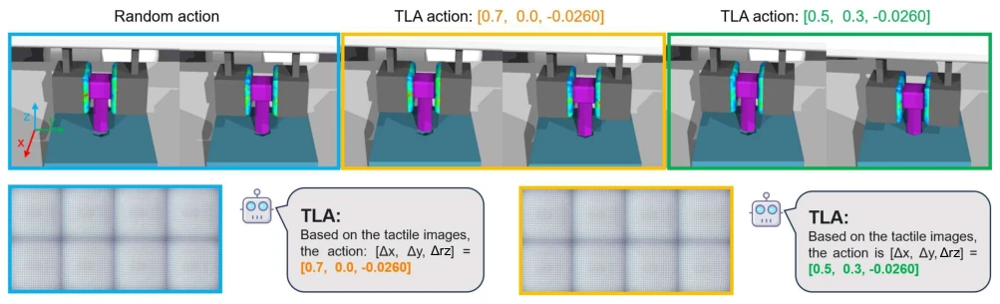

这篇论文给 VLA 模型强行加了“触觉皮肤”，试图解决接触式操作中的感知盲区。TLA 模型基于 Qwen2-VL，把复杂的触觉时序信息压缩成一张静态图，再用 LoRA 微调。虽然作者吹嘘 85% 的成功率，但仔细看实验，大部分是在仿真环境里跑出来的，真机迁移还没落地，这“仿真到真实”的鸿沟还是得填。更有趣的是，它把时间序列压成空间网格，感觉有点“暴力美学”，牺牲了时序动态信息换取 ViT 的兼容性。不过，24k 的触觉动作数据集确实是个稀缺资源，毕竟接触式操作的数据太难搞了。总的来说，是个不错的尝试，但离真正的“具身智能”还差点火候，特别是那个 y 轴预测不准的问题，说明 2D 触觉图还是有物理局限，别指望靠拼贴图就能解决所有接触问题。
This paper forcibly adds "tactile skin" to VLA models, attempting to address perceptual blind spots in contact-based manipulation. The TLA model, based on Qwen2-VL, compresses complex tactile temporal information into a single static image, followed by LoRA fine-tuning. Although the authors boast of an 85% success rate, a closer look at the experiments reveals most were run in simulation environments; real-world robot transfer has not yet been implemented, and this "sim-to-real" gap still needs to be bridged. More interestingly, it compresses time series into a spatial grid, feeling somewhat like "brute-force aesthetics," sacrificing temporal dynamic information to gain ViT compatibility. However, the 24k tactile action dataset is indeed a scarce resource, given that contact-based manipulation data is notoriously difficult to acquire. Overall, it is a decent attempt, but still falls short of true "embodied intelligence," especially regarding the inaccurate y-axis prediction issue, which indicates that 2D tactile maps still have physical limitations; do not expect stitched images to solve all contact problems.
Existing VLA models primarily rely on vision, but in contact-rich tasks such as fine assembly, vision is often insufficient, and touch is key [1], [5]. Although some works attempt to combine touch and language, most remain at the perception level, lacking action generation [17], [18]. For instance, VLA models like RT-2 are powerful but cannot handle complex contact feedback [11]. Existing tactile datasets either lack action labels or are too small, limiting policy learning [19]. Therefore, the authors propose TLA, aiming to achieve end-to-end mapping from touch to action through language grounding, addressing the poor generalization of contact-based manipulation. Particularly for tasks like peg-in-hole requiring fine pose adjustment, pure vision models tend to fail, while pure touch models lack semantic understanding, making the combination of both an inevitable trend.
方法Method
整体流程是：采集触觉图像序列 -> 编码为触觉 token -> 结合语言指令 -> 预测动作 token。核心创新在于触觉编码：将左右手指、多时间步的触觉图像（共 8 张）拼接成 3x3 网格，将时间信息转化为空间信息，用 ViT 提取特征。语言模型选用 Qwen2 7B，冻结触觉编码器，用 LoRA 微调 LM。动作预测方面，为了适应离散 tokenizer，将连续动作缩放并取整，训练时用 Next Token Prediction 损失，推理时再反量化。这种设计避免了重新设计动作 tokenizer，利用了预训练模型的数值知识。此外，数据集构建在 Isaac Gym 中，使用 FEM 模拟传感器形变，保证了触觉图像的高保真度，为模型训练提供了坚实基础。这种将连续动作离散化的策略虽然简单，但有效利用了 LLM 的预训练能力，避免了传统策略网络需要重新设计输出头的麻烦。
The overall pipeline is: collect tactile image sequences -> encode into tactile tokens -> combine with language instructions -> predict action tokens. The core innovation lies in tactile encoding: splicing tactile images from left and right fingers across multiple time steps (totaling 8 images) into a 3x3 grid, converting temporal information into spatial information, and using ViT to extract features. The language model selected is Qwen2 7B; the tactile encoder is frozen, and the LM is fine-tuned using LoRA. Regarding action prediction, to adapt to the discrete tokenizer, continuous actions are scaled and rounded; Next Token Prediction loss is used during training, and dequantization is performed during inference. This design avoids redesigning the action tokenizer and leverages the numerical knowledge of pre-trained models. Additionally, the dataset is constructed in Isaac Gym, using FEM to simulate sensor deformation, ensuring high fidelity of tactile images and providing a solid foundation for model training. Although this strategy of discretizing continuous actions is simple, it effectively utilizes the pre-trained capabilities of LLMs, avoiding the trouble of redesigning output heads required by traditional policy networks.

Fig. 1. Overview of the proposed Tactile-Language-Action model and tactile-action dataset. The Tactile-Language-Action model is a 7B mul- timodal language model trained on our tactile-action dataset collected for contact-rich manipulations. With supervised fine-tuning, the TLA can control the robot completing various peg-in-hole assembly tasks.

Fig. 2. Architecture of Tactile-Language-Action model. Given the tactile images and text instruction, TLA predicts the 3-dimensional robot actions. TLA consists of two modules: (1) Tactile Encoder captures the tactile representations for the language model. (2) The Language Model fuses and understands tactile and text information to predict the robot’s actions.
The dataset contains 24k tactile action pairs, based on Isaac Gym simulation. Baselines include BC and Diffusion Policy. Evaluation metrics include Goal Convergence Rate (GCR) and L1 error. In the single peg task, TLA's L1 error is 78% lower than the suboptimal method. In multi-peg and varying gap (1.0mm-2.0mm) tasks, TLA's success rate is significantly higher than baselines, with strong OOD generalization capabilities. Failure cases show inaccurate y-axis prediction, attributed to insufficient representation of vertical direction information in 2D tactile maps. Experiments show that although simulation data carries sim2real risks, TLA remains robust under unseen geometries and gaps, proving the effectiveness of language grounding for tactile skill generalization.

Fig. 6. Visualization and analysis of failure case. The TLA fails to insert the triangular peg because the triangular peg has a smaller assembly clearance along the y-axis, and the TLA model based on 2D observations has poor prediction performance along the y-axis.
其他图片Other Figures

Fig. 5. Snapshots of the robot successfully inserting the hexagonal peg into the target hole with the assistance of our proposed TLA.